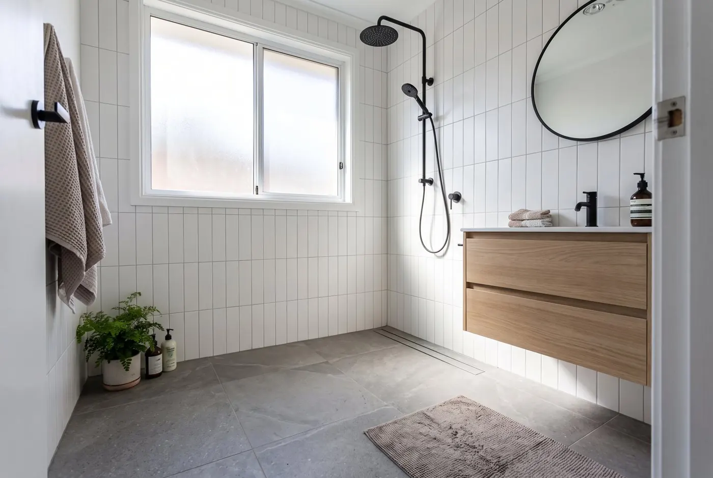

Bathroom remodeling and tub-to-shower conversions in Chester and Montgomery counties
Tub-to-shower conversions, full gut renovations, or a fresh update on a bathroom that has seen better days. The plumbing is done by the owner, and the estimate comes in writing after a free in-home visit.
Book a free consultation Call or text (484) 939-8535
Licensed & insured · Women-owned · Most bathrooms take 2–4 weeks · Serving Chester County, the 422 corridor and greater Philadelphia

What a D N E bathroom project includes
- Tiled and curbless showers, tubs, vanities and toilets
- Waterproofing done properly the first time
- Accessibility and aging-in-place options
- Ventilation, lighting and heated floors
How the free consultation works
The owner comes to your home, walks the space with you and asks what is bugging you about it. A few days later you get a written estimate specific to your house, and you decide on your own time.
Before the visit you can sketch your room in the online planner. The estimate comes in writing after the visit.
Every client gets a private project page with photos, the schedule and payments, so you always know where things stand.
Other services
Bathroom Remodeling questions we hear most
How long does a bathroom remodel take?
A hall bath or tub-to-shower conversion usually takes 2–3 weeks; a full primary bathroom 3–4 weeks. The schedule goes in writing before we start and is tracked on your private project page.
Can you convert my tub to a walk-in shower?
Yes, it is one of the most common projects we do in Chester and Montgomery counties. We handle the demolition, new drain, waterproofing, tile, glass and fixtures.
Is the consultation really free?
Yes. The owner comes to your home, walks the space with you, and you never have to decide that day.
Where we do bathroom work
Chester and Montgomery counties and the 422 corridor, plus Bucks, Delaware and Philadelphia counties and nearby South Jersey.
Book a free consultation
In your home. Nothing to decide on the spot.